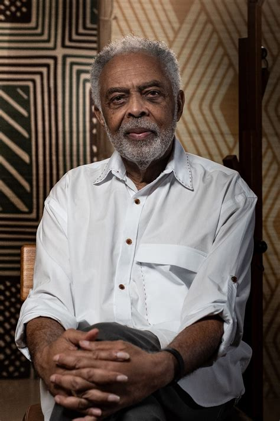

Gilberto Gil
Gilberto Passos Gil Moreira nació en Salvador, Bahía, y transformó la música brasileña desde los años 60 con el movimiento Tropicalista. Su estilo fusiona samba, reggae, rock, y música africana con una visión crítica y humanista.
En los años 2000, fue Ministro de Cultura y defendió políticas públicas como los Puntos de Cultura. Su obra expresa justicia social y espiritualidad afrobrasileña.
← Veja a página principal